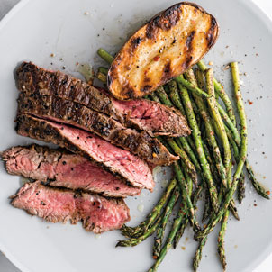
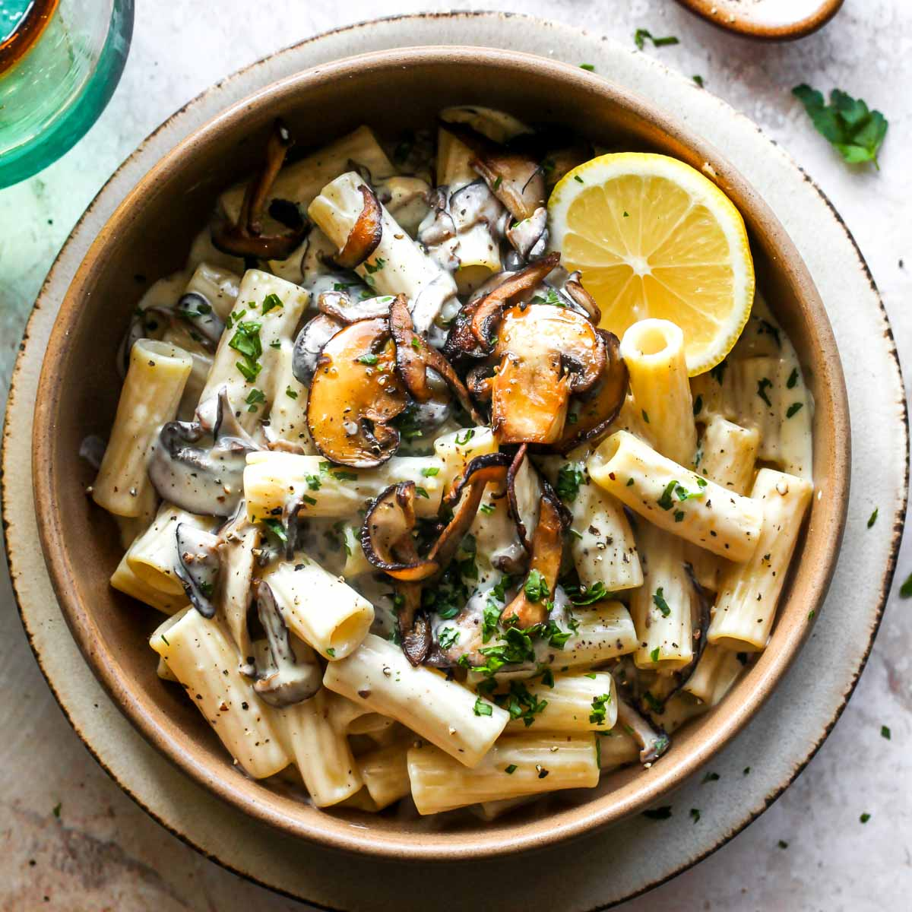
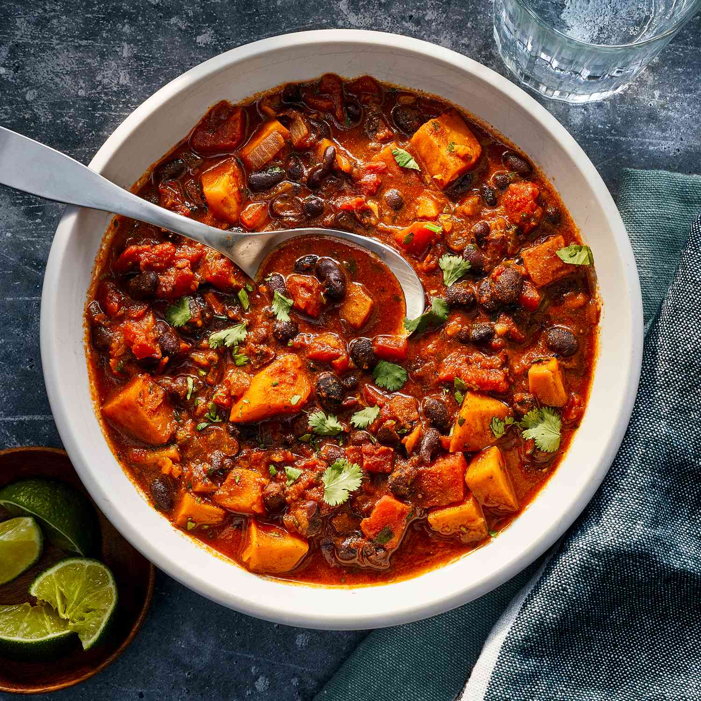

Meat/Fish
Pan-Seared Steak With Potatoes & Asparagus
Ingredients
- 400g baby potatoes cut into quarters
- 1 tsp olive oil
- 200g steak at room temp
- 80g asparagus trimmed
- 30g Greek yogurt
- 1/2 tbs cider vinegar
- Dijon mustard
- 1/8 tsp garlic powder
Macros
- Energy---750cals
- Protein---63g
- Fat---25g
- Carbohydrates---65g
- Sat.Fat---8g
- Sugar---19g
- Fibre---15g
Cooking Instructions
- Simmer potatoes in a saucepan of seasoned water for 8-12 mins
- Rub steak with oil and season with salt and pepper
- Add steak to hot frypan and cook for 4 mins per side for medium can be cooked to your liking
- Remove steak and leave to rest. Add asparagus to pan and cook for 5 mins
- Combine yogurt, vinegar, mustard and garlic in a bowl to make the sauce
- Arrange steak and vegetables on plate and top with sauce
Vegetarian
Creamy Mushroom Pasta
Ingredients
- 1 tsp olive oil
- 40g baby spinach leaves
- 200g mushrooms
- 1 garlic clove crushed
- 100g dried pasta
- 1 cup vegetable stock
- 1/2 cup ricotta
- 50g frozen peas
- 40g parmesan grated
Macros
- Energy---831cals
- Protein---41g
- Fat---30g
- Carbohydrates---92g
- Sat.Fat---17g
- Sugar---8g
- Fibre---11g
Cooking Instructions
- Heat oil in a large pan and cook mushrooms and garlic
- Add pasta and stock and bring to the boil. cover and cook, stirring occasionally until pasta almost cooked
- Stir in ricotta, peas, spinach and half the parmesan and cook for a few more mins
- Divide between bowls and top with remaining parmesan
Vegan
Sweet Potato Chilli
Ingredients
- 300g sweet potatoes peeled & cubed
- 1/2 tbs olive oil
- 1/2 tin black beans drained & rinsed
- 1/2 tin lentils drained & rinsed
- 70g frozen peas
- 1/2 tin diced tomatoes
- 1/4 red onion chopped
- 1/2 green pepper deseeded & chopped
- 1/2 cup vegetable stock
- 1/2 garlic clove crushed
- 1 tsp Mexican spice mix
- 1/4 cup coconut yogurt
Macros
- Energy---800cals
- Protein---38g
- Fat---20g
- Carbohydrates---100g
- Sat.Fat---6g
- Sugar---35g
- Fibre---34g
Cooking Instructions
- Preheat oven to 200°C/fan 180°C/gas 6 and line a baking tray with baking paper.
- Toss potatoes with oil and bake for 15 mins until golden
- Transfer to large bowl and combine with all other ingredients except the yogurt
- Place mixture in baking dish and bake for 25 mins
- Divide between bowls and top with yogurt